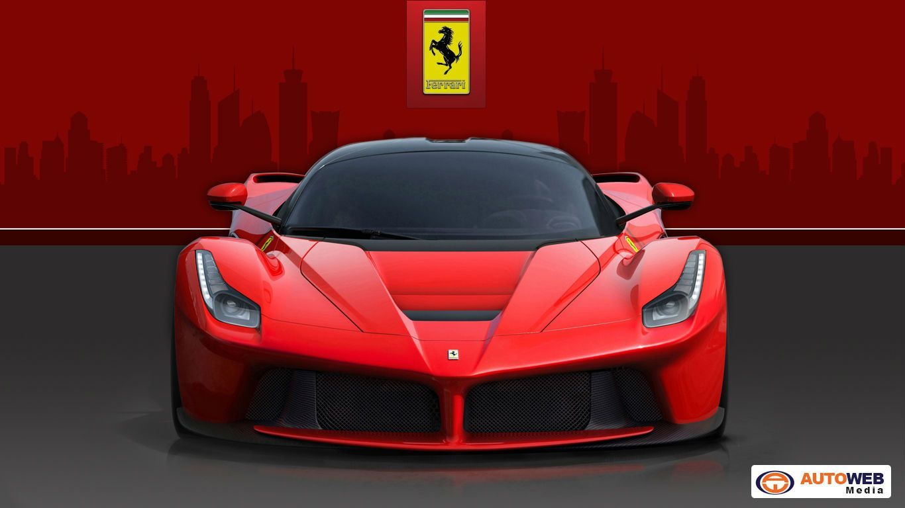

Maranello’s roaring tribute to raw internal combustion, weaponized with Formula 1 hybrid technology to create the most emotional and visceral hypercar ever built.

"The LaFerrari is a pure masterpiece. It bridges the gap between old-school Italian passion and futuristic hybrid engineering, making it the undeniable soul of the Holy Trinity."
Ferrari did not introduce electric power into their lineup to save the planet or lower emissions; they did it with a singular, ruthless purpose: to make a massive, naturally aspirated engine accelerate faster than anything else on Earth. By pairing their legendary racing heritage with cutting-edge electronics, they created a machine that feels entirely organic yet impossibly futuristic.
Driving this machine is an absolute assault on the senses, sending a staggering 950 horsepower exclusively to the rear wheels. The digital HY-KERS system works invisibly in the background, instantly filling the lower power bands with electric torque so that the driver never experiences a single moment of lag.
This intelligent energy deployment ensures that a vicious wave of linear acceleration is always available, pulling harder and harder all the way up to a screaming 9,250 RPM redline. Combined with active computer-controlled aero panels, the chassis constantly adapts to balance high-speed downforce and cornering grip.
Ultimately, the LaFerrari behaves less like a heavy, modern hybrid road vehicle and more like a purebred, road-legal Formula 1 car unleashed on public streets. It stands as a timeless monument to an era when analog driving emotion and digital innovation met in perfect harmony.